Proprietary to General Electric
Direction 5193855-800, Rev# 4
LS 5.X RT Ltd. Access Service Information Adv
Proprietary to General Electric |
| Last Revised: | 26 March 2007 |
This LFC (Load from Cold) procedure supports the following GRE/Xtream Operator Console systems:
HiSpeed QX/i
LightSpeed 1.X
LightSpeed 2.X
LightSpeed 3.X (4- and 8-Slice)
LightSpeed 4.X (16-Slice)
LightSpeed 5.X Pro16 (80kw & 100kW) -- MDAS & GDAS
LightSpeed 5.X RT -- MDAS & GDAS
LightSpeed 5.X (4/8/16-Slice) MDAS & GDAS
Software collector called “06MW29.7” contains the following items:
5154896 - LightSpeed Xtream Console Operating System
Version - GEMS Linux 4.3.16
5182028 - LightSpeed Applications Software DVD
Version 06MW29.7
5193458 - Xtream Serial-Over-LAN Service Software
Version - 2.0 Supports: Westville or Jarrell DARC/VDARC
5192389 - Limited Access Software
5192235 – Class C
Version 06MW29C.7
| NOTE: | The Xtream Serial-Over-Lan Service Software is not used during the LFC unless instructed via a pop-up message box "SOL Service - ...run the Serial Over LAN Service CD...". This CD is loaded directly into the DARC Node. Then press the reset (or cycle power) at the front panel of the DARC Node as required. This CD will auto-eject when the SOL load process is complete. |
Open Unix Shell and type the following:
{ctuser@hostname} rsh darc
[ctuser@darc] cat /proc/scsi/scsi
| NOTE: | Output should look similar to the following. Look for
two drives. If there are NOT two drives, troubleshoot. Attached devices: Host: scsi0 Channel: 00 Id: 00 Lun: 00 Vendor: SEAGATE Model: ST336753LW Rev: 0006 Type: Direct-Access ANSI SCSI revision: 03 Host: scsi0 Channel: 00 Id: 01 Lun: 00 Vendor: SEAGATE Model: ST336753LW Rev: 0006 Type: Direct-Access ANSI SCSI revision: 03 |
Close the Unix Shell.
Perform this recommended procedure to check DVD or MOD functionality prior to performing a LFC.
Verify the SCSI Tower DVD-RAM power is applied and the green LED at front of tower is lit.
Verify the SCSI Tower terminator LED is lit (located at the rear).
Verify the Host Computer DVD-ROM drive does not have a disk in it.
Open a Unix Shell and verify the SCSI Tower components are present (two examples are shown below, but may not match your SCSI Tower configuration):
{ctuser@hostname} scsistat
Example #1:
Device 0 00 Direct-Access SEAGATE ST336753LW FW Rev: HPS2 << OS 36 GB
Device 1 01 Direct-Access SEAGATE ST373453LW FW Rev: HPS2 << 73 GB Image
Device 1 02 Direct-Access SEAGATE ST373453LW FW Rev: HPS2 << 73 GB Image
Device 2 03 Optical Device SONY SMO-F551-SD FW Rev: 1.04 << SCSI Tower Sony MOD
Device 2 04 CD-ROM MATSHITA DVD-RAM LF-D521 FW Rev: A109 << SCSI Tower DVD-RAM
Example #2:
Device 0 00 Direct-Access SEAGATE ST336753LW FW Rev: HPS3
Device 1 01 Direct-Access SEAGATE ST373453LW FW Rev: HPS3
Device 1 02 Direct-Access SEAGATE ST373453LW FW Rev: HPS3
Device 2 03 Optical Device SONY SMO-F551-SD FW Rev: 1.03 << SCSI Tower Sony MOD
Device 2 04 CD-ROM HITACHI DVD-RAM GF-2050 FW Rev: E372 << SCSI Tower Hitachi DVD-RAM
Device 4 00 CD-ROM HL-DT-ST DVD-ROM GDR8163B FW Rev: 0B15
(For Linux Consoles Only) DVD Drive Verification:
Create a temporary testing file:
{ctuser@hostname} su -
Password: #bigguy
{root@hostname} dd if=/dev/urandom of=/tmp/foo bs=1024 count=50k
51200+0 records in
51200+0 records out
Ensure the temporary testing file was created:
{root@hostname} ls -al /tmp/foo
-rw-r--r-- 1 root root 52428800 May 10 11:55 /tmp/foo
(”5242880” represents the file size.)
Calculate the checksum for the local temporary file.
| NOTE: | These numbers will change every time you generate a new file. |
{root@hostname} sum /tmp/foo
45731 51200
| NOTE: | 1st # = checksum (FE should write this down to use for
comparison later) 2nd # = size of file checksum'd |
Checksum File Size in kilobytes
-------- ----------------------
45731 51200
Insert DVD into SCSI Tower.
Data on inserted DVD will be destroyed.
Create a filesystem on the DVD by typing the following:
{root@hostname} mkfsDVD
----------------------------------------------------------
*** CAUTION ***
A filesystem already exists on this DVD.
This utility will create a new file system on the DVD. In turn it will wipe clean any existing files and data. Make sure you have the correct DVD media in the correct DVD drive.
Do you wish to proceed? [n] y
Making file system. This will take approximately 3-5 minutes
-----------------------------------------------------
Mount the DVD:
{root@hostname} mountDVD
Mounting DVD
Copy the file to the target device:
{root@hostname} cp /tmp/foo /DVD && sync
Unmount the drive & eject the DVD to ensure the system's cache is flushed. This is required to calculate the checksum properly.
{root@hostname} unmountDVD
DVD is now unmounted.
Eject the DVD
Reinsert the DVD
Remount the target device, using mountDVD.
Generate checksum on file in DVD drive:
{root@hostname} sum /DVD/foo
45731 51200
Verify (compare) the file's checksum calculated by the host console matches the checksum calculated by the drive.
{root@hostname} unmountDVD
DVD is now unmounted.
Eject the DVD
(For IRIX Consoles Only) MOD Drive Verification:
Create a temporary testing file:
{ctuser@hostname} su -
Password: #bigguy
{root@hostname} dd if=/dev/urandom of=/tmp/foo bs=1024 count=50k
51200+0 records in
51200+0 records out
Ensure the temporary testing file was created:
{root@hostname} ls -al /tmp/foo
-rw-r--r-- 1 root root 52428800 May 10 11:55 /tmp/foo
(”5242880” represents the file size.)
Calculate the checksum for the local temporary file.
| NOTE: | These numbers will change every time you generate a new file. |
{root@hostname} sum /tmp/foo
45731 51200
| NOTE: | 1st # = checksum (FE should write this down to use for
comparison later) 2nd # = size of file checksum'd |
Checksum File Size in kilobytes
-------- ----------------------
45731 51200
Insert MOD into SCSI Tower.
Data on inserted MOD will be destroyed.
Create a filesystem on the target device (MOD) by typing the following:
{root@hostname} mkfsMOD
----------------------------------------------------------
*** CAUTION ***
A filesystem already exists on this MOD.
This utility will create a new file system on the MOD. In turn it will wipe clean any existing files and data. Make sure you have the correct MOD media in the correct MOD drive.
Do you wish to proceed? [n] y
Making file system. This will take approximately 3-5 minutes
-----------------------------------------------------
Mount the MOD:
{root@hostname} mountMOD
Mounting MOD
Copy the file to the target device:
{root@hostname} cp /tmp/foo /MOD && sync
Unmount the drive & eject the MOD to ensure the system's cache is flushed. This is required to calculate the checksum properly.
{root@hostname} unmountMOD
MOD is now unmounted.
Eject the MOD
Reinsert the MOD
Remount the target device, using mountMOD.
Generate checksum on file in MOD drive:
{root@hostname} sum /MOD/foo
45731 51200
Verify (compare) the file's checksum calculated by the host console matches the checksum calculated by the drive.
{root@hostname} unmountMOD
MOD is now unmounted.
Eject the MOD
| Before loading the software onto your CT-only GRE/Xtream console, ensure your system has software release 06MW03.5 loaded. If it is not at this release, STOP now and load 06MW03.5 software. | |
| Do not load this software on a PET/CT system. Do not load this software on a CT GOC1 (IRIX, Pegasus) or GOC2 (Linux, Pegasus) Operator Console. This software requires the presence of a DARC Node subsystem. | |
Verify that 06MW03.5 software is loaded on the system by one of the following methods:
Open a Unix Shell and type one of the following:
check_config
- OR -
swhwinfo -all
Look at the Common Service Desktop Home Page.
Record Autovoice Volume control settings (<ALT-F3> by Toolchest, upper right corner).
Write down all of the system INFO information on the reconfig screens, including the network information (use the appropriate information sheet, found in GRE/Xtream Operator Console Information Sheets). You cannot restore the INFO file during the Load from Cold on the new console.
Verify and record specific system hardware configuration.
Open a shell and type the following:
{ctuser@hostname} cat /usr/g/config/INFO
Record screen information in Console Information Sheets.
For an example output, see Example Config/INFO Output.
If the console has Connect Pro installed, write down the information when you run installhisris so it can be entered on the new console when installing the Connect Pro option.
Close the Service Desktop window in the upper left corner of the screen.
If your system does NOT have “Exam Split” option, skip this section.
Perform these steps before powering down your current GOC2, GOC3 or GOC4 Operator Console:
Open a Unix Shell and type the following:
{ctuser@hostname} su –
Password: #bigguy
[root@hostname] ls –l ~ctuser/ves/.hesMode
| NOTE: | There are no spaces in the phrase ~ctuser/ves/.hesMode |
Examine the results.
If the results are similar to:
-rw-r--r-- 1 ctuser users 0 Apr 3 12:43
/usr/g/ctuser/ves/.hesMode
Then HES (Hard Exam Split) mode is configured.
If the results show ‘No such file or directory’, then VES (Virtual Exam Split) mode is configured.
Record Exam Split Mode (Hard or Virtual). This info will be used during the LFC Options Installation.
Close the Unix Shell
| Potential for Loss of Patient Data. | |
| This procedure will overwrite existing data. | |
| Before performing this procedure, ensure that the Archive and Network Queues are empty of patient data. If they are not, DO NOT proceed until it can be verified that all patient data has been archived. |
| After each reboot during the software install process, an 'Unrecognized X-Ray Tube' message will be displayed (as shown in Tube Install Certification Tool - Screens), until the tube identity has been selected and 'Flash Download' has also been performed. The same “unrecognized x-ray tube” message will also be displayed on the CSD Homepage, until the ID and flash download are done. | |
| Do NOT switch screens or run other programs while saving System State. Otherwise the GUI may “hang” while trying to close, and the System State will need to be saved again. | |
| NOTE: | New tasks are included in this SW release These task will generate data that needs to be saved to the system state DVD. Follow the save and restore procedures throughout this document precisely or valuable information may be lost. |
Perform one of the following methods to Save System State, depending on current Operator Console type
IRIX systems Save System State for Upgrading to Linux (see Section 3.1.1).
For Linux systems, Save System State as listed in Section 3.1.2.
Two “Save System State” MOD procedures must be performed:
| |
| NOTE: | The original “Save System State” MOD will be used only if the customer wants to revert back to the original IRIX-based SW. |
Perform the following steps on the IRIX console before powering down and installing the GRE/Xtream Operator Console.
Save System State (twice) to an MOD on the IRIX console before installing the new GRE/Xtream Operator Console.
Insert the MOD into the SCSI Tower MOD drive.
Select: [Service Desktop] .
If reloading software, select: [UTILITIES] . If upgrading from earlier version software, select: [PM] .
Select: [System State] .
Select [ALL] to save all data.
Select [SAVE] .
If applicable, select [OK] when the following message appears: System State Media Status: Please insert a DVD or MOD into the drive and press Save again.
When completed select [DISMISS] .
For the original MOD, label the MOD as “Final IRIX Conversion Release”.
Repeat Steps a-j, for the second “Save System State”, using a new MOD, and label with the same SW release that is found on the DVD label.
Modify System State MOD
Insert System State MOD into the drive.
Open a Unix Shell and type the following:
{ctuser@hostname} su –
Password: #bigguy
[root@hostname] mountMOD
[root@hostname] cd /MOD/service_mod_data/system_state
[root@hostname] chmod 666 *bb .epdlog
(change permissions on tube usage & edit patient data files)
[root@hostname] rm -f *.stats
(removes runtime stats on non-HPOWER systems)
[root@hostname] rm -f iipBackupGen2.tar.Z
(removes IIP “tar ball” files à not used by new IIP)
[root@hostname] rm -f Voxtool.prefs
(removes Voxtool preferences ⇒ new Voxtool application uses new set of preferences)
[root@hostname] rm -f smartscore.tar.gz
(removes SmartScore files ⇒ SmartScore not applicable to PathFinder / not supported by PathFinder software)
[root@hostname] rm -f vxtlBackup.tar
(removes VoxTool files ⇒ new Voxtool application uses new set of files)
Remove VoxtoolPrefs/* and CT_PerfusionPrefs/* files
[root@hostname] rm -f movierx*
(removes Direct 3D preferences that the customer cannot edit)
[root@hostname] rm -f *.flm
[root@hostname] rm -f *.pro
[root@hostname] rm -f *.vrp
[root@hostname] rm -f *.adv
[root@hostname] rm -f *.adv.research
[root@hostname] rm -f *.disp
[root@hostname] rm -f *.disp.research
[root@hostname] cd
[root@hostname] unmountMOD
Close the Unix Shell.
Go to Section 3.2
Two “Save System State” DVD procedures must be performed:
| |
| NOTE: | The original “Save System State” will be used only if the customer wants to revert back to the original SW. |
Perform these steps before powering down your current GOC2, GOC3 or GOC4 Console:
Insert the DVD-RAM into the SCSI Tower DVD drive.
Select [Service Desktop]
If reloading software, select: [UTILITIES] . If upgrading from earlier version software, select: [PM] .
Select [System State]
| NOTE: | System State Save may be under Utilities or PM. |
Select [ALL] to save all data.
Select [SAVE]
If applicable, select [OK] when the following message appears: System State Media Status: Please insert a DVD or MOD into the drive and press Save again.
| NOTE: | Successful completion is indicated by the message, Save/restore system state: completed successfully. |
When completed select [DISMISS] .
IMPORTANT: Do NOT select [DISMISS] more than once. Doing so will result in the GUI becoming hung, and the System State will be unusable. Should this occur, Save System State again.
For the original DVD, label the DVD as “Linux System State Backup”.
Repeat Steps 1-8, for the second “Save System State”, using a new DVD, and label with the same SW release that is found on the Applications DVD label.
Close the Service Desktop window in the upper left corner of the screen.
Sites performing the next sub-section should not remove the DVD-RAM from the SCSI Tower DVD-RAM drive.
This section only applies to GOC1 (IRIX) and GOC2 (Linux-Pegasus) Operator Console upgrades.
Power-down the GOC1 or GOC2.
Install the new GRE/Xtream (Linux) Operator Console.
You will be using your existing SCIM/Keyboard, monitors and mouse, unless you received a new SCIM or mouse. You will receive a new trackball that must be used on the new Operator Console. Your old trackball will no longer work.
Install the new SCSI Tower (DVD-ROM drive and MOD drive).
Install the new trackball (it is connected at the rear of the Operator Console near the connections for the keyboard and mouse). The extension cable for the trackball is already connected to the USB port at the rear of the Host Computer.
When you power up the GRE/Xtream (Linux) Operator Console:
Verify the SCSI cable is connected to the SCSI Tower
Verify the SCSI Tower power is applied and green LED on front is lit.
Verify the SCSI Tower terminator LED is lit (located at the rear).
See the Installation Instructions that came with the new Operator Console.
Determine type of Host computer:
Remove the console front cover and look at the front of the Host Computer for host type.
Open a shell and type: hinv<Enter>
You will see one of the following:
(For HP8000) CPU: GenuineIntel Intel(R) Xeon(TM) CPU 2.66GHz
(For HP8200) CPU: GenuineIntel Intel(R) Xeon(TM) CPU 3.20GHz
Refer to software version recorded earlier in Section 2.3.
In a Unix shell, type the following:
{ctuser@hostname} su -
{ctuser@hostname} #bigguy
{root@hostname} dmidecode | grep -i version
BIOS Information
Version: JQ.W1.13.US = 1.13 for xw8000
Version: 786B8 v2.10 = 2.10 for xw8200
| NOTE: | If you have an xw8200 that does not have 2.10 BIOS, continue
the LFC and order the 2.10 BIOS Floppy (P/N 5191771) to update the
Host later. (For GE Healthcare Personnel Only) The BIOS update is also available via Support Central. |
Using the information gained from the above two sections, follow the flowchart below, to determine whether or not you need to perform the BIOS Setup.
(Clicking on the blue boxes will advance to the proper section of this document.)
Illustration 1: BIOS Setup Decision Tree

(For Systems with an HP xw8200 PC) Proceed toSection 3.5 (LFC).
(For Systems with an HP xw8000 PC) Prepare to verify/load HP xw8000 PC BIOS (JQ.W1.13US) and setup the BIOS. Follow all of the procedures in this section.
| (For 06MW03.X Software) Wait 1-2 minutes after the “System halted” message appears, to allow the DARC Node to properly power-down. Future SW releases (e.g., 06MW29.7) have corrected this issue. | |
Determine Host Computer BIOS version
Open a Unix Shell and halt the system:
{ctuser@hostname} sync
{ctuser@hostname} sync
{ctuser@hostname} halt
The Operator Console monitor will display a System halted message when it is acceptable to power OFF the Operator Console.
Power Operator Console ON at the front switch.
At the hp invent screen on the monitor, press <F2.>
Verify the Main menu screen is displayed.
View BIOS Version, and verify it is JQ.W1.13US or greater.
If it is the correct version, go to Section 3.4.2.
If it is NOT the correct version, proceed with Step 2 (below).
Remove Operator Console front cover.
Insert BIOS floppy disk in Host Computer.
Reboot Host Computer. (Front power button on Host computer.)
When the BIOS Setup Utility screen is displayed, select Option A, Flash BIOS by typing A and pressing the <Enter> key.
The BIOS will begin to load from floppy. Allow the BIOS to load completely.
Reboot, press any key.
The “Press any key to reboot” message will be displayed when the BIOS-flashing is complete.
Remove BIOS floppy disk from the drive to prevent boot-up from floppy.
Press <F2> to interrupt the boot-up sequence to edit BIOS settings.
Changes can be made by cursor-selecting the parameter, then using the “+” and “-“ buttons to toggle its value.
The Main setup screen is shown in Illustration 2. Confirm that all parameters are set as shown.
Illustration 2: Main Setup Screen

From the Main Menu screen, use arrow key to select (move to) Advanced to view the Advanced setup screens.
The Advanced BIOS setup screen is shown below. The BIOS components that will be updated in the next steps are highlighted.
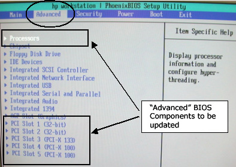
From the Advanced Menu screen, use arrow key to select (move to) Processors and press <Enter>.
Set all Processors parameters as shown below.
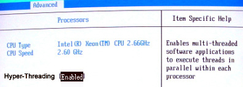
When Processors setup is complete, press <Esc> key to return to the Advanced menu.
From the Advanced Menu screen, use arrow key to select (move to) PCI Slot 1 and press <Enter>.
Set all Advanced-PCI Slot 1 parameters as shown below.

When Advanced-PCI Slot 1 setup is complete, press <Esc> key to return to the Advanced menu.
From the Advanced Menu screen, use arrow key to select (move to) PCI Slot 2 and press <Enter>.
Set all Advanced-PCI Slot 2 parameters as shown below.

When Advanced-PCI Slot 2 setup is complete, press <Esc> key to return to the Advanced menu.
From the Advanced Menu screen, use arrow key to select (move to) PCI Slot 3 and press <Enter>.
(For Adaptec) Set all Advanced-PCI Slot 3 parameters as shown below.
(For QLogic) Device Vendor and Card Vendor will read 1077H. Set all Advanced-PCI Slot 3 parameters as shown below, EXCEPT Option ROM Scan, which should be set to [Enabled].

When Advanced-PCI Slot 3 setup is complete, press the <Esc> key to return to the Advanced menu.
From the Advanced Menu screen, use arrow key to select (move to) PCI Slot 4 and press <Enter>.
Set all Advanced-PCI Slot 4 parameters as shown below.
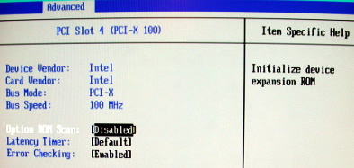
When Advanced-PCI Slot 4 setup is complete, press <Esc> key to return to the Advanced menu.
From the Advanced Menu screen, use arrow key to select (move to) PCI Slot 5 and press <Enter>.
Set all Advanced-PCI Slot 5 parameters as shown below.

When Advanced-PCI Slot 5 setup is complete, press the <Esc> key to return to the Advanced menu.
From the Main Menu screen (shown below), use arrow key (move) to select Power.
Setup POWER as shown below.
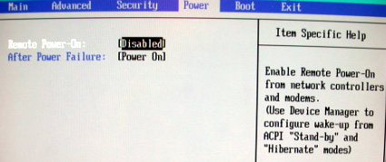
When POWER setup is complete, press the <Esc> key to return to the Main menu.
Setup BOOT: From the Main Menu screen, use arrow key to select (move to) Boot.
Set all Boot parameters as shown below.

Arrow-select (move) to Boot Device Priority and press the <Enter> key.
Setup BOOT DEVICE PRIORITY as shown below.

| NOTE: | The SCSI CD-ROM Drive may be missing. Ignore this. |
| NOTE: | The <!> key disables/enables devices. |
When BOOT DEVICE PRIORITY setup is complete, press the <Esc> key to return to the Main menu.
Save BIOS settings as shown in the two figures below.
From Main menu, arrow to (move to) EXIT.
Select Exit Saving Changes and <Enter> key.

Select [YES] and <Enter> key to “Save configuration changes and exit now”.

Host BIOS setup is complete.
Use the procedures in this section to perform a LFC.
| NOTE: | System State SAVE must be performed before shutting down apps (Application Software). |
| NOTE: | During the OS load you need to select "ignore" twice when
it complains about I/O errors with a SCSI device. These messages
will occur with systems without a DASM: Input/output error during read on /dev/sd? Input/output error during write on /dev/sd? |
Remove the GRE/Xtream Operator Console's front cover.
Remove the Hospital Backbone Ethernet cable from the Console Bulkhead Assembly, located at the rear of the Operator Console.
Insert the OS disk into the DVD-ROM drive on the Host Computer. See the following illustration.
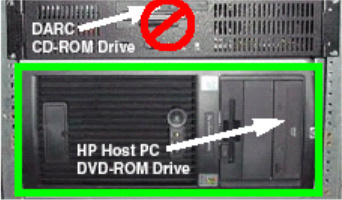
Select one of the following methods to re-power the Operator Console:
If Applications are up:
Select the [Shut Down] button.

Select [Restart] then [OK] to restart the system.
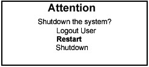
If Application Software is down, at the toolchest open a Unix Shell and type:
(For 06MW03.X Software) Wait 1-2 minutes after the “System halted” message appears, to allow the DARC Node to properly power-down. This issue is corrected in 06MW29.7.
{ctuser@hostname} sync
{ctuser@hostname} sync
{ctuser@hostname} halt
The Operator Console monitor will display a System halted message when it is acceptable to power OFF the Operator Console.
Power OFF the Operator Console at the front panel switch.
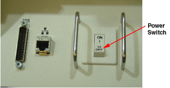
Wait 30 seconds to allow the disk drive to settle; then power ON the Operator Console at the front panel switch.
As the computer restarts, the booting process messages appear. After the booting process completes, the boot: prompt appears.
At the boot prompt, type the following depending on system type:
(For English Keyboard only) GEHC2<Enter>
(For International Command only) iGEHC2<Enter>
| NOTE: | The Console Operating System load takes approximately 15 minutes. If the boot: prompt does not appear, then either the DVD-ROM is bad or the Console Operating System DVD is not installed in the drive. |
| NOTE: | Typing GEHC will result in both scan and display being on one monitor and require a LFC. |
After the OS is loaded, a red button appears and displays [Reboot] .
Remove the OS disk, when it ejects.
Press <Enter> to reboot.
The Host Computer reboots.
| NOTE: | Do not insert the Application disk into the Host Computer until the system reboots and the [root@localhost] window appears, displaying the [root@localhost root]# prompt. |
There is a single Application DVD used for both the Host Computer and the DARC. All applications software will be loaded to the Host Computer during this process.
| FAILURE TO INSTALL THE CORRECT APPLICATION SOFTWARE AND SELECT THE CORRECT SYSTEM DAS HARDWARE CONFIGURATION WILL RESULT IN SYSTEM DOWNTIME AND DCB CIRCUIT BOARD REPLACEMENT. (THIS FAILURE WILL OCCUR AFTER THE FLASH DOWNLOAD PROCEDURE FLASHES THE FIRMWARE.) | |
After the Host Computer reboots, verify that the window appears with the [root@localhost root]# prompt.

In the root@localhost Window, verify the SCSI Tower MOD and DVD are present:
[root@localhost root]# cat /proc/scsi/scsi
Insert the Application DVD into the DVD-ROM drive on the Host Computer. See the illustration below.
After approximately 15 seconds a pop-up box appears:
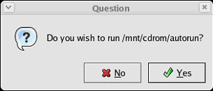
| NOTE: | If the pop-up box Question does not
appear after two minutes, type the following and wait approximately
one minute for the pop-up box to appear. mount /mnt/cdrom <Enter> /mnt/cdrom/autorun <Enter> |
Select [Yes] to run /mnt/cdrom/autorun.
After approximately 15 seconds, an Installation Utility window appears. (See illustration, below.)
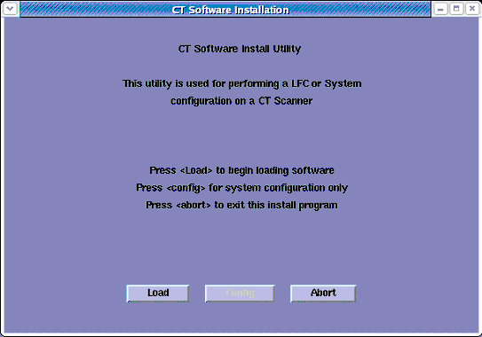
Select [Load] . A prompt message appears asking if you wish to load the INFO file from the System State DVD.

System State DVD:
If you do NOT have a System State or the System State is unusable, select [No] .
If you have a System State DVD, select [Yes] . When prompted, ensure the System State DVD is in the DVD drive in the SCSI Tower (on top of the console), and then select [ok] .

An “unMount media” pop-up may appear. No action is required.
Select the System tab.
See example System Settings screen, below.

Verify that the Next Patient Exam # on the System Settings screen is the value restored from Save System State. Otherwise, set to 1.
Verify that the proper Time Zone is selected
Select/enter information as required for your system configuration.
Select the Preferences tab.
See the illustration below, for an example Preference Settings screen.

Select the units for patient weight.
Select Language: ( [English] or [other] ).
Select Preferred FastCal KV - select the kV to be calibrated during FastCal. These kVs should include all kVs that the site uses for patient scanning.
Select Target Noise Index Table.
(Default is Table 2.)
Verify proper Date Format is selected.
Verify proper Time Format is selected.
Select AutoVoice Language.
Verify Modified in Room Start is set to [Off] . Sites in Japan must be set to [On] .
Set HIPAA Present to [OFF] unless the customer requests HIPAA to be ON.
Select the site preferred Dose Information Display option for the site to use in monitoring calculated Patient Dose (on view edit screen):
Select [ON] (full DOSE Display) or previous Customer setting.
| NOTE: | A scroll bar below this menu may be present. It contains the System Information from the INFO file System State. |
Select the Hardware tab.
Select [Hardware Parameter Selection] .
An example Select Hardware Configuration screen is shown below.

| NOTE: | FAILURE TO INSTALL THE CORRECT APPLICATION SOFTWARE AND SELECT THE CORRECT SYSTEM DAS HARDWARE CONFIGURATION WILL RESULT IN SYSTEM DOWNTIME AND DCB CIRCUIT BOARD REPLACEMENT. (THIS FAILURE WILL OCCUR AFTER THE FLASH DOWNLOAD PROCEDURE FLASHES THE FIRMWARE.) |
Select your System types HW Parameters, and close this window.
On the Hardware Settings screen, select the proper Number of IGs present in the Operator Console.
| NOTE: | SDAS 4-slice, MDAS 4-slice and 8-slice systems cannot upgrade from the 1 single/standard IG Node to the 3 IG Node upgrade option. |
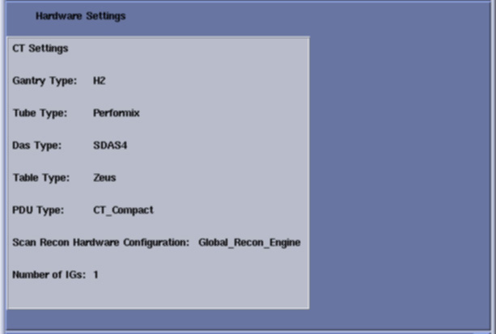
Select the Network tab.
See example Network Settings screen, below.

Configure Network Settings:
Suite Name: Add your suite name here.
| NOTE: | The Suite Name must start with a letter, followed by 3 alphanumeric characters. Total must be four characters long. The name of the OC interface is <Suite Name>_oc within the scanner's subnet. It is suggested that you choose CT01 as its name, unless a different Suite Name is required. |
Host Name: Add your host name here.
| NOTE: | The Host Name identifies the hostname
and AE Title of the scanner. It:
|
IP Address - Site supplied address.
The following procedure should be performed if your customer Ethernet hospital backbone begins with 172.16.0.xx, OR if the scanner will connect to a device with an IP address of 172.16.0.xx.
If hospital backbone starts with 172.16.0.xx and this is a first time install, change the DARC subnet by checking the Change DARC subnet box, and fill in the following value: 169.254.0. Continue and complete the software load on the HOST and DARC.
If the hospital backbone starts with 172.16.0.xx, and the DARC subnet was already changed, verify that the Change DARC subnet box is checked and a subnet is already filled. Continue and complete the software load on the HOST and DARC.
If the DARC subnet was already changed and needs to be set to the 172.16.0 subnet, deselect the Change DARC subnet box. Continue and complete the load on HOST and DARC.
Net Mask - Site supplied address.
| NOTE: | If the hospital backbone IP address is 192.9.220.xx, then the Net Mask must be set to 255.255.255.252. |
Broadcast Address - Site supplied address.
Default Gateway - Site supplied address.
| NOTE: | Make sure the <NUM LOCK> button on the keyboard is not active. If it is, deselect it to enable the [ACCEPT] button in the next step. Failure to deactivate the NUM LOCK results in load issues. |
If your customer has AW Direct Connect, then select Enable AW DirectConnect?. Complete the LFC, making certain to configure this feature in Section 3.19.3. (Do not configure AW Direct Connect now.)
If there is an Internal Option - Internal Subnet setting displayed and checked, then un-check it. (This option might not appear on your system.)
Verify with customer’s network administrator if they have NIS. If they do, ensure the Advanced Options and Use NIS? boxes are checked. If they don’t, ensure these selections are not checked.
Domain Name: add your name here (get name from customer’s network administrator).
Enter the IP Address of Internal Server: add your IP address here (get IP address from customer’s network administrator).
If your customer wants to synchronize the system time to their NTP server, then select Enable Network Time Protocol, and enter the Primary Server IP address.
Select the PET tab and make sure the PET option is disabled.
Select the [ACCEPT] button at the right corner of the User Interface.
An Install INFO pop-up box is displayed.
See the following illustration, for a typical Install INFO message (the Install INFO message is different for each system configuration).
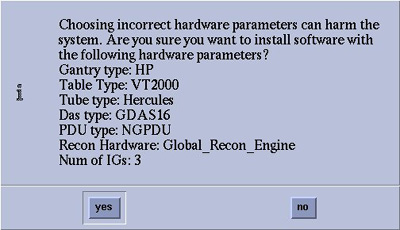
Select [yes] , if correct, and wait for system to reboot.
| NOTE: | If the information is not correct, select the [NO] button. This returns you to the Hardware screen. Select the [Hardware Parameters Selection] button and select the correct system configuration from the displayed list. Select the [Accept] button again, followed by the [YES] button on the Install INFO pop-up to accept the new hardware configuration. |
The following pop-up message appears:
Please make sure the CT Application SW is in the drive - the system will be rebooted.
No action is required for this pop-up. The system will automatically reboot after approximately 10 seconds if the [OK] button is not selected.
| NOTE: | Do not remove the Apps DVD from the Host Computer until instructed to do so. |
As the system reboots, the following shell Installation screen appears and the application software starts loading.

When the system prompts you to reboot (after approximately 13 min), select [Yes] . The system is going down for reboot NOW.

| NOTE: | During the reboot of the console, a message may appear to the effect that the system was not able to determine what the tube type was and to run the TIC tool. This message should be ignored at this point. |
After approximately 3 minutes, a pink pop-up box appears, stating CT Software Auto-Start Disabled. In this box, select [OK] .

Press the button on the DVD-ROM drive to remove the Apps DVD from the Host Computer.
Open a Unix Shell. Type the following:
{ctuser@hostname} su -
{ctuser@hostname} #bigguy
[root@hostname]# setdate
Note: Type “q” to quit anytime. Enter to proceed:
Note: TO BE ACCURATE, this tool will prompt you to enter the “Second”. Watch your clock or PC carefully to enter the proper value, and hit [Enter] at the right second to set the accurate time. Enter to proceed:
Enter the current Year (1980-2030) [2006]:
Enter the current Month (1-12) [04]:
Enter the current Day (1-30) [14]:
Enter the current Hour (Military Time) (0-23) [18]: 15
Enter the current Minute (0-59) [13]: 18
Enter the current Second (0-59) [00]: 10
\nUpdating the time on the OC and SBC, Please Wait...
PING darc (172.16.0.2) 56(84) bytes of data.
Current OC date : Fri Apr 14 15:18:00 CDT 2006
Could not retrieve the SBC TImeZone.
Please make sure the TimeZones for the OC and SBC are the same.
[root@hostname]#
Upon completing the above command, the user will receive one of the two following responses:
If the DARC Node has been replaced and has no software, the following response will appear:
--- darc ping statistics ---
1 packets transmitted, 0 received, 100% packet loss, time 0ms
The darc is not responding. darc will sync time with oc during next darc reboot
Current OC date : Fri Apr 14 15:18:00 CDT 2006
Could not retrieve the SBC TImeZone.
Please make sure the TimeZones for the OC and SBC are the same.
[root@hostname]#
If the DARC Node is being reloaded and had software, the following response will appear:
--- darc ping statistics ---
1 packets transmitted, 1 received, 0% packet loss, time 0ms
rtt min/avg/max/mdev = 0.139/0.139/0.139/0.000 ms, pipe 2
connect to address 10.0.1.2: Connection refused
connect to address 10.0.1.2: Connection refused
trying normal rsh (/usr/bin/rsh)
connect to address 10.0.1.2: Connection refused
connect to address 10.0.1.2: Connection refused
trying normal rsh (/usr/bin/rsh)
Current OC date : Fri Apr 14 16:14:05 CDT 2006
Current DARC date : Fri Apr 14 16:14:04 CDT 2006
setdate completed with NO ERRORS.
[root@hostname]#
Confirm the Host Computer Software type. The software section of the version output should match example shown.
Open a Unix Shell and type the following to see software and hardware Config information:
{ctuser@hostname} cd /usr/g/bin
{ctuser@hostname} swhwinfo
06MW29.7.<hardware revision info here>
Example: 06MW29.7.H2_P_S4_G_Zeus
Confirm that the swhwinfo results match the software revision shown on the Applications Disk.
If the revisions match, continue with this procedure.
If the revisions do NOT match, reload the software (Section 3.5).
Type: cat /GEHC*
Release: GEHC/CTT Linux 4.3.16
Built: Tue Jul 12 12:29:10 CTD 2005
Confirm that the cat result matches the Operating System version shown on the OS disk.
Close the Unix Shell.
This section describes the steps necessary to change the DARC Node BIOS to enable the OS load onto DARC Node from the Host Computer. The DARC Node Boot Order BIOS is modified before the DARC Node OS load, and must be returned to original settings after the DARC Node OS load for proper normal operation.
| NOTE: | Be patient. Telnet response may be slow. |
Open a Unix Shell and type the following:
{ctuser@hostname} su -
Password: #bigguy
[root@hostname] service cliservice start
[root@hostname] telnet localhost 623
At Server Prompt type: darc
username <Enter>
password <Enter>
Login successful
dpccli> reset
ok
dpccli> console
| NOTE: | A slight delay here is normal. Be patient. |
Interrupt the DARC boot process to enter the BIOS Setup mode. When the message “Press <F2> to enter setup” appears, press <F2>.
| NOTE: | <F2> may have to be pressed many times before BIOS setting screen can be seen. There will be a short delay before the DARC BIOS setup screen is displayed. |

Select Boot Menu, using arrow keys.
Highlight Boot Device Priority Menu, then press <Enter>.

Highlight 1st Boot Device, then press <Enter>.
A small window will appear with the options available. Using the down-arrow key, scroll down to highlight IBA 1.1.08 Slot 0338 (for a Westville DARC) or PS -slimtype COMBO (for a Jarrell DARC), then press <Enter>.

Using the down-arrow key, scroll down to highlight the 2nd Boot Device entry. Press <Enter>.
A small window will appear with the options available. Using the down-arrow key, scroll down to highlight the ATAPI CD-ROM entry (for a Westville DARC) or IBA GE slot 0320v entry (for a Jarrell DARC). Press <Enter>.

Using the down-arrow key, scroll down to highlight the 3rd Boot Device entry. Press <Enter>.
A small window will appear with the options available. Using the down-arrow key, scroll down to highlight the Hard Drive entry (for a Westville DARC) or PM-ST94813A entry (for a Jarrell DARC). Press <Enter>.
(For Westville) Verify the Boot device Priority is set to:
IBA 1.1.08 Slot 0338
ATAPI CD-ROM
Hard Drive
IBA 1.1.08 Slot 0339
Removable Devices
| NOTE: | The removable devices might not be present. This is OK. |
(For Jarrell) Verify the Boot device Priority is set to:
PS -slimtype COMBO
IBA GE slot 0320v
PM-ST94813A
IBA GE slot 0321v
EFI Boot Manager
Press <Esc> to exit back to Boot menu.
Save DARC BIOS settings:
From Boot menu, arrow to (move to) Exit menu.
Highlight Exit Saving Changes, and press <Enter>

Highlight [Yes], and press <Enter>, to “Save configuration changes and exit now.”
Wait one minute.

| NOTE: | After saving the DARC BIOS, the DARC BIOS Setup Utility will disappear (within one minute) and the DARC will begin to Reboot. If the BIOS SETUP UTILITY window does not disappear within a minute, perform the steps within this section again. |
Close the Terminal Window.
The OS DVD will be used again; however, this time it will be loaded onto the DARC Node from the Host Computer. If any problems arise, verify the correct disk is installed.
For details on Serial Over LAN CD Usage, refer to VDARC/DARC Node OS Load Troubleshooting.
| NOTE: | The DARC OS is loaded from the Host Computer DVD-ROM Drive. |
Place OS DVD into the Host Computer DVD-ROM Drive. (See Illustration, below.)
Open a Unix Shell and type the following:
{ctuser@hostname} su -
Password: #bigguy
[root@hostname] cd /usr/g/scripts
[root@hostname] ./start_darcOS
An Attention window appears. See the illustration below.
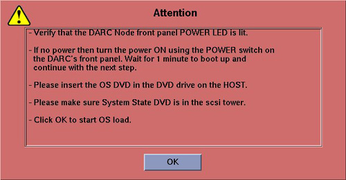
Follow the instructions in the Attention window.
Select [OK] .
A sh window displays initial information, followed by a series of rows of dots.
Copying OS packages from the DVD to the HOST’s hard drive. This takes about 10 minutes.………………………………………………………………………….
………………………………………………………………………….
………………………………………………………………………….
………………………………………………………………………….
| NOTE: | The display of dots reflects the copy process from the Host Computer DVD drive to the DARC Node. This process takes approximately 10-15 minutes. |
Once the copy process is complete, the load will begin and the following message will appear:
Resetting the DARC to start the OS load - this takes about three minutes.………………………………………………………………………….
OS load has started. This takes about 15 minutes.
##.## % done.
| NOTE: | The DARC OS Load will stop prematurely ONLY if an error is encountered (refer to VDARC/DARC Node OS Load Troubleshooting). An Error Dialog Box will appear with a brief description of the error. Select [OK] after reading the instructions displayed on the Monitor. Refer to DARC OS Load Pop-Up Boxes for additional information on these error pop-up windows. Also, if any problems arise, verify the correct software disk is installed and verify BIOS Setup Utility Boot Order is correct. |
| NOTE: | A %done status is displayed during the DARC OS load. This is only a timed countdown sequence and does not provide status of the actual load process. When the DARC OS load has completed a reboot message will appear. |
Once the load process is complete, a sh window appears and the DARC reboots:
Waiting for the DARC to boot up…
When the DARC OS load has completed, a pop-up message is displayed:

The OS disk ejects automatically. Remove the OS disk from the drive and close the drive.
Select [OK] .
To verify the OS has been loaded on the DARC Node, open a Unix Shell and type the following:
| NOTE: | If the DARC login prompt [root@localhost root] is not present, then try reloading the DARC Node OS again per the procedure. Always be sure the DARC OS matches the Host OS already loaded. |
{ctuser@hostname} su -
Password: #bigguy
[root@hostname] rsh darc
[root@localhost root]
(If the prompt is displayed exactly as shown, then the login was successful and the DARC OS was loaded properly.)
[root@localhost root] exit
This completes the OS load on the DARC.
Next: load the DARC Applications in the Host Computer. See Section 3.6.3.
| NOTE: | The DARC Applications have already been loaded on the Host Computer during the CT Applications load process. As a result you no longer need to reinsert the Application disk into the Host Computer. |
Open a Unix Shell and type the following:
{ctuser@hostname} su -
Password: #bigguy
[root@hostname] cd /usr/g/scripts
[root@hostname] ./start_darc_load
A shell window pops up and the load begins. A successful load takes 5-12 minutes.
When the process is complete the load window will disappear.
Close the Unix Shell (do not use for the next process).
This section describes the steps necessary to change the BIOS on the DARC Node. This step is required to return the DARC BIOS to its original settings, now that the OS has been loaded onto the DARC from the Host Computer. The DARC BIOS was changed at the beginning of the procedure to load the OS onto DARC from the Host Computer, and now will be changed back for normal operation.
| NOTE: | The DARC BIOS must be returned to their original settings to avoid a known Intel PXE boot problem, which will prevent future communication to the DARC Node. |
| NOTE: | Be patient. Telnet response may be slow. |
Open a Unix Shell and type the following:
{ctuser@hostname} su -
Password: #bigguy
[root@hostname] service cliservice start
[root@hostname] telnet localhost 623
server: darc
username <Enter>
password <Enter>
Login successful
dpccli> reset
ok
dpccli> console
GEHC/CTT Linux 4.3.16
Kernel 2.6.7-2.2 smp...
See you on the darc side of the moon
darc login:
| NOTE: | A slight delay here is normal. Be patient. |
| NOTE: | If the "reset” and “console" commands fail and the "Active SOL failed" message is displayed, connect to the DARC via SOL, and then type the command "console". With the SOL session connected to the DARC Console, press the "reset" switch (not the power switch) on the front of the DARC and proceed with the instructions below. |
Interrupt the DARC boot process to enter the BIOS Setup mode. When the message “Press <F2> to enter setup” appears, press <F2>.
| NOTE: | <F2> may have to be pressed many times
before BIOS setting screen can be seen. There will be a short delay before the DARC BIOS setup screen is displayed. |
Highlight Boot Menu, using arrow keys.
Highlight Boot Device Priority Menu, then press <Enter>
Highlight 1st Boot Device, and press <Enter>.

Continue setting Boot Device Priority.

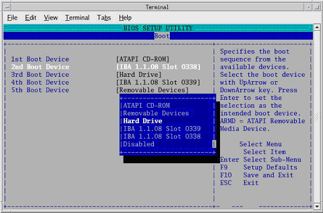

(For Westville) Verify the Boot device Priority is set to:
ATAPI CD-ROM
Hard Drive
IBA 1.1.08 Slot 0339
IBA 1.1.08 Slot 0338

(For Jarrell) Verify the Boot device Priority is set to:
IBA GE slot 0320v
PM-ST94813A
IBA GE slot 0321v
PS -slimtype COMBO
Press <Esc> to exit back to Boot menu.
Save BIOS settings:
From Boot menu, arrow to (move to) Exit menu.
Highlight Exit Saving Changes, and press <Enter>.
Highlight [Yes] , and press <Enter>, to “Save configuration changes and exit now.”
Wait one minute.
| NOTE: | After saving the DARC BIOS, the DARC BIOS Setup Utility will disappear (within one minute) and the DARC will begin to Reboot. If the BIOS SETUP UTILITY window does not disappear within a minute, perform the steps within this section again. |
When the darc login: prompt appears, close the Terminal Window.
Verify the OS and Application Software has loaded correctly.
Open a Unix Shell and type the following:
{ctuser@hostname} rsh darc
[ctuser@darc] cd /usr/g/bin
[ctuser@darc bin] ./swhwinfo
[ctuser@darc bin] cat /GEHC*
Confirm that the swhwinfo results match the software revision shown on the Applications disk.
06MW29.7.<hardware revision info here>
Example: 06MW29.7.H2_P_S4_G_Zeus
If the revisions match, continue with this procedure.
If the revisions do NOT match, reload the software (Section 3.5).
Verify that cat results match the Operating System version and Software Build Date.
Release: GEHC/CTT Linux 4.3.16
Built: Tue Jul 12 12:29:10 CTD 2005
Close the Unix Shell.
You must set the date and time on the Host Computer with Application Software down.
Open a Unix Shell and log in as root:
{ctuser@hostname} su -
Password: #bigguy
Set date and time. Type the following:
{root@hostname}# setdate <Enter>, to be prompted through the individual entries. Where:
Note: Type “q” to quit anytime. Enter to proceed:
Note: TO BE ACCURATE, this tool will prompt you to enter the “Second”. Watch your clock or PC carefully to enter the proper value, and hit [Enter] at the right second to set the accurate time. Enter to proceed:
Enter the current Year (1980-2030) [2006]:
Enter the current Month (1-12) [04]:
Enter the current Day (1-30) [14]:
Enter the current Hour (Military Time) (0-23) [18]: 15
Enter the current Minute (0-59) [13]: 18
Enter the current Second (0-59) [00]: 10
\nUpdating the time on the OC and SBC, Please Wait...
PING darc (172.16.0.2) 56(84) bytes of data.
Upon completing the above command, the user will receive one of the two following responses:
If the DARC Node has been replaced and has no software, the following response will appear:
--- darc ping statistics ---
1 packets transmitted, 0 received, 100% packet loss, time 0ms
The darc is not responding. darc will sync time with oc during next darc reboot
Current OC date : Fri Apr 14 15:18:00 CDT 2006
Could not retrieve the SBC TImeZone.
Please make sure the TimeZones for the OC and SBC are the same.
[root@hostname]#
If the DARC Node is being reloaded and had software, the following response will appear:
--- darc ping statistics ---
1 packets transmitted, 1 received, 0% packet loss, time 0ms
rtt min/avg/max/mdev = 0.139/0.139/0.139/0.000 ms, pipe 2
connect to address 10.0.1.2: Connection refused
connect to address 10.0.1.2: Connection refused
trying normal rsh (/usr/bin/rsh)
connect to address 10.0.1.2: Connection refused
connect to address 10.0.1.2: Connection refused
trying normal rsh (/usr/bin/rsh)
Current OC date : Fri Apr 14 16:14:05 CDT 2006
Current DARC date : Fri Apr 14 16:14:04 CDT 2006
setdate completed with NO ERRORS.
[root@hostname]#
Type:
[root@hostname]# shutdown -y -g0 << this is a “zero”, not an “oh”
Turn OFF the Operator Console power at the front switch.
Wait ten (10) seconds, then turn ON the Operator Console power at the front switch.
When the Host Computer is up, open a Unix shell and type the following:
{ctuser@hostname} st
A pink pop-up Attention Message appears: OC initializing. Please wait….
| NOTE: | If a message concerning incorrect DAS configuration is encountered, review the Error Log for the Card List issue. Select from the following two methods to alleviate this issue: Flash Download Update or Power OFF the Axial Drive and HVDC at the Gantry service panel - turn OFF DAS Power for 1 minute - turn DAS Power back ON - turn Axial Drive and HVDC at the Gantry service panel back ON - Flash Download Update - verify error message has disappeared. If error message reappears then troubleshoot the DAS/DCB. |
Select [OK] for other pink message boxes that appear throughout the reboot process.
After each reboot during the software load process, an 'Unrecognized X-Ray Tube' message will be displayed (as shown below) until the tube identity has been selected (later in this procedure) and 'Flash Download' has also been performed.

If any Recon Selftest Failures are encountered, review the error log. Make certain to note the errors for troubleshooting after the LFC.
| For Perfusion and Denta Scan: If you loaded software in a language other than English, please reconfig, changing the language to English, to load these two options. Otherwise, the LFC procedure may fail. | |
| Options must be loaded before Protocols. | |
Insert the Options DVD in the SCSI Tower DVD-RAM drive.
| NOTE: | (For GE Healthcare Employees Only) If you do not have the Options DVD, then you can use the eLicense feature. Follow this link to the eLicense Page: http://egems.gehealthcare.com/elicense/index.jsp |
| NOTE: | Options loaded via DVD or CD will NOT be saved to System
State. All Options loaded via e-License WILL be saved to System State. |
With the Applications up, select the [SERVICE DESKTOP] .
Select [CONFIGURATION] .
Select [INSTALL OPTIONS] . A blank Software Options screen appears:

Select [INSTALL] . A Select Mechanism window opens (see illustration, below). Select the mechanism through which you want to install Option Keys.

Select Permanent. A Select Device window opens (see illustration, below). Select the mechanism through which you want to install the Permanent Option Keys.

Select the [MEDIA] button and insert the Options DVD or MOD.
Select [OK] . Available options appear on the Software Options screen.

Select either the DMPR (Direct Multi Planar Reformat) or Variviewer Option installations, if applicable, per Note:
| NOTE: | IMPORTANT! DMPR and Variviewer are mutually exclusive options with 05MW14.5 or later software. If you have DMPR (the full option), software will not allow you to install Variviewer, and vice-versa. For example, do not install Variviewer, if you plan to load DMPR. |
Perform the following Option installations, if applicable:
| NOTE: | The order of installation is critical. |
VolumeViewer
CardIQ
CardEP
Exam Split
Pick remaining options one at a time from the Available Options list and select [INSTALL] to update each selection and place it on the Installed Options List.
When the process is complete, select [Quit] then [Quit] to close the window.
Sometimes the system does not see the DVD drive on the SCSI Tower. To avoid this problem, open a Unix Shell and type the following:
{ctuser@hostname} su -
Password #bigguy
[root@hostname] dvd_search
The following should be displayed:
[dvd_search] SCSI DVD-RAM Drive is found
[dvd_search] DVD-RAM SW-9574S will be used.
Alias device dvd: src2b0t4u0 (sr0) -> (sgc2b0t4u0, sg4)
Alias device mod: sdc2b0t3u0 (sdd) -> (sgc2b0t3u0, sg3)
Unable to match device for line 3 (alias mod1)
[root@hostname ~]#
Close the window.
(For GE Heathcare Employees or Licensed Customers Only) If applicable, load Class C Service Software now.
(For GE Healthcare Employees Only) If applicable, load Class M Service Software now.
| Limited Access Software must not be loaded on LS1X, LS2X, LS3X,
LS4X, and LS5X (HP60) systems. After the Limited Access software patch is loaded, the "System Troubleshooting Tool" menu selection will be available under Common Service Desktop --> Diagnostics" to support no-leftside-service of the gantry Note that STC-style Gantry hardware will not successfully load the patch, and a message will be displayed stating that the patch failed to load due to the Gantry Hardware. LS 1.X, 2.X, 3.X and 4.X systems can expect to see this message. | |
Open a Unix Shell.
{ctuser@hostname} su -
Password: #bigguy
Insert patch disc into the DVD-ROM drive on the HP Host Computer.
[root@hostname]patch_install -c
The patches on patch CD will be listed
Before installation of each patch, the window will wait for user's confirmation as follows:
I will install update <Patch Name>, is this ok ? [y/n]
Input y to install this patch or n to cancel installation of this patch.
After install all patches, type patch_status in the Shell window to confirm the patches are installed.
| NOTE: | This procedure is ONLY for upgrade sites with System State Information on a MOD (not a DVD). All other sites should restore system state as instructed in Section 3.14.2. |
When applications are up, open a Unix Shell from the Service icon -> Utilities tab -> Utilities folder. Perform the following:
Insert the IRIX System State MOD into the SCSI Tower MOD drive. The DVD drive should be empty.
{ctuser@hostname} cd /usr/g/bin
{ctuser@hostname} sysstategui -MOD -IRX2LNX
When the system state GUI comes up, select and restore each item individually, by selecting the item and then selecting [RESTORE] .
| NOTE: | Continue until all items are restored. |
The IRIX to Linux conversion should take around 40 minutes. The command lines will scroll very quickly during the conversion in the window. When the scrolling stops, the System State has completed the conversion. When it has completed, close the window.
Shutdown Applications.
Close the Unix shell.
Remove the MOD from the drive.
Proceed toSection 3.15 (skip the next sub-section, “Restore System State from DVD”).
Open a Unix Shell and verify the SCSI Tower MOD and DVD are present:
{ctuser@hostname} scsistat
Close the Unix Shell.
Insert the Save System State DVD into DVD-RAM SCSI Tower drive.
Select the SERVICE icon.
| NOTE: | (For GE Healthcare Employees Only) If the Service Key is installed, press the (1), (2), (3) keys in order to proceed. |
Select: [UTILITIES]
Select: [SYSTEM STATE]
Select [ALL]
Select [RESTORE]
Verify the overall system state content has restored correctly (look for message “Save/Restore System State Completed Successfully”), then select [CANCEL] .

When completed, select [DISMISS] or close the window.
| NOTE: | If Scan Hardware Reset question appears - answer [NO]. This reset is performed during FLASH Download Update. |
The Reconstruction (not Scan) portion of the system can be tested at this point.
When Application Software is up, perform the following:
Select [Recon Management] , and select [Restart Queue] if not in the Idle Mode.
Select [RETRO RECON] on the left Monitor.
Select the rat gold series.
Select [SELECT SERIES] .
Select [CONFIRM] .
Verify the image(s) reconstruct and are displayed.
Remove Rat Gold generated images via Image Works.
Select [QUIT] .
Select the Service Icon.
Select [Diagnostics] .
Select [Image Generation]
Select [Recon Data Path] .
Verify it is set to 1 and ALL.
Select [Run] .
Verify Recon Data Path tests pass.
Select [Dismiss] or close the GUI.
| NOTE: | The Flash Download takes anywhere from 5-30 minutes, depending on which subsystems require updates. |
Before running the Flash Download Tool, verify the reset switch at the gantry is not flashing and reset the 120 VAC, if necessary. Also, try to ping the following (press <Ctrl-C> and close the shell when finished pinging), to see if there are any issues:
(For LightSpeed 4.X)
ping obcr
ping etc
ping stc
(For LightSpeed 5.X Pro16 (100kW) and Pro16 (80kW))
ping orp
ping stc
- OR -
ping tgp
Select the [SERVICE DESKTOP] .
Select in sequence: UTILITIES → FLASH DOWNLOAD.
Select [UPDATE] . Ignore any initial errors.
When the pop-up shown below appears, enter the Collimator Serial Number, and select [Accept] .
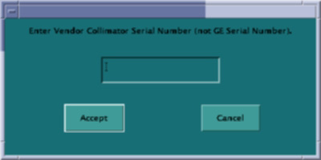
When the pop-up shown below appears, select [Yes] , to save the CCB file.

When then Flash Download process is complete, select [DISMISS] or close the window.

| NOTE: | After Flash Download the system will report the following
message: The entire Generator database has been reset. You may now restore JEDI runtime parameters. Filament calibration is required before scanning patients. If you are reloading software, this message may not appear. If you get this message, you must perform a Filament Calibration, because the JEDI database was reset. |
If upgrading a GOC1 (IRIX) Console to a GRE/Xtream Console, then the gantry revolutions information must be restored.
Open a Unix shell and type the following:
{ctuser@hostname} getStats
Select menu option (by typing the appropriate number) to Update Gantry Revolutions Counter Stats.
Enter the gantry revolutions counter information captured at the beginning of this LFC (Section 3.1.1).
If HIPAA is turned ON, then configure it now. (Refer to HIPAA Configuration) When HIPAA configuration is complete, return to this procedure.
For general information on Product Network Filters, please see Product Network Filter Theory.
If your customer has special network requirements, then proceed to Configure Product Network Filters now. When PNF configuration is complete, return to this procedure.
| NOTE: | If network problems arise after configuring PNF:
|
If the site requires the configuration of AW Direct Connect, then configure it now (see AW Direct Connect). When configuration is complete, return to this procedure.
|
(For Scanners with GE Tubes)
If the software
is installed by a non-GE person or the GE field engineer does not
have a service key, a GE Field Engineer is required On-Site within
30 days, to perform the verification portion of this procedure. This
verification cannot be done by non-GE employees. If a GE Service employee
is not currently on site, please contact your GE Healthcare representative
to arrange a visit. This section is absolutely critical to perform. Failure to do so will result in nuisance pop-ups to the customer and tube performance may decrease. | |
If the tube in your system has a ’Smart ID’ board, the software automatically selects the tube identity, and sets it to ‘GE Performix Tube’. There is no action needed. For all other systems or if the software does not automatically select the tube identity, follow the procedure shown in the Flowchart below.
Verification that a tube is a GE Healthcare tube (called “GE Performix Tube” in the TIC tool) can be done by checking the tube insert model number (2120785 or 2120785-2), which can be found on the tube rating plate. (Exception: The “Performix Pro” is a GE OEM tube, but does not have this tube insert model number.)
| NOTE: | Do not double-click the Tube Certification Tool. This will cause more than one tool window to be displayed; one with message ‘service key information not available’. If this happens, close the window and try again. If this happens more than once, reboot system and try again. |
Illustration 3: Selection of Tube Identity

Flowchart Note:
Possible pop-up messages at start-up:
If the tube selection is GE tube without time limit, no pop-up messages relating to tube identity on boot up.
If the tube selection is GE with time limit, a message with days remaining for GE FE to verify tube will be shown on boot up until GE FE removes the time limit with service key. If not verified by GE FE within the time limit, the system will default to 'All Others'.
If the tube is set to 'All Others', unrecognized x-ray tube installed message will always be shown at boot up.
Please refer to Tube Install Certification Tool - Screens for examples of the screens displayed by the Tube Install Certification Tool.
Overview: This is a firmware requirement to load tube identification parameters.
| NOTE: | The Flash Download takes anywhere from 5-30 minutes, depending on which subsystems require updates. |
Before running the Flash Download Tool, verify the reset switch at the gantry is not flashing and reset the 120 VAC, if necessary. Also, try to ping the following (press <Ctrl-C> and close the shell when finished pinging), to see if there are any issues:
(For LightSpeed 4.X)
ping obcr
ping etc
ping stc
(For LightSpeed 5.X Pro16 (100kW) and Pro16 (80kW))
ping orp
ping stc
- OR -
ping tgp
Select the SERVICE icon.
Select in sequence: UTILITIES → INSTALL → FLASH DOWNLOAD.
Select [UPDATE] . Ignore any initial errors.
When then Flash Download process is complete, select [DISMISS] or close the window.

| NEVER Use [CTRL - ALT - DELETE] to reboot the host computer. This technique will NOT reboot all console subsystems, and as such is an unacceptable practice. | |
To restart the system:
Replace the Hospital Backbone Ethernet cable to the Console Bulkhead Assembly (located at the rear of the Operator Console).
Open a Unix shell and type the following:
{ctuser@hostname} sync
{ctuser@hostname} sync
{ctuser@hostname} reboot
When the system comes up the following screen will be displayed if HIPAA Present was set to On during the LOAD process. Verify the admin screen below has the following 'Select user':
Select user: admin
Password: ctAdmin
Insert the Save System State DVD into the SCSI Tower DVD-RAM drive.
Select [Service] icon.
Select CT button.
Select [Utilities] then [System State] .
Select [All] to select all the cals, characterizations, etc.
Select [Save] .
Select [Yes] .
When completed select [Cancel] then [DISMISS] .
Close the Service Desktop window in the upper left corner of the screen.
Successfully perform a Scout scan.
Successfully perform a Helical scan.
Successfully perform an Axial scan.
If have DICOM print configured, perform DICOM print to confirm network operation (Product Network Filter (PNF) setup).
If have archive server configured, perform image archive & retrieve to confirm network operation (PNF setup).
| NOTE: | 1) After loading Class C & Class M Software,
perform a Save System State. 2) After loading Class C & Class M Software disable Telnet via PNF. |
Software Load Process is now complete.
Perform FastCal as required.
Remove the System State DVD-RAM from the SCSI Tower.
Replace the front and rear Operator Console covers.
(For FX/Xtream w/Q1 '06 SW Upgrades Only) Return to the Flowchart/Steering Guide to complete the installation.
Save System State:
Insert the Save System State DVD into the DVD tower drive.
Select: [SERVICE DESKTOP]
If reloading software, select: [UTILITIES]
Select: [SYSTEM STATE]
Select [ALL] to select all the cals, characterizations, etc.
Select [SAVE] .
If applicable, select [OK] when the following message appears: System State Media Status: Please insert a DVD or MOD into the drive and press Save again.
When completed select [DISMISS] .
Save all reformat / recon protocols.
Close the Service Desktop window in the upper left corner of the screen.
Sites performing the next sub-section should not remove the DVD from the SCSI Tower DVD-RAM drive.